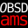
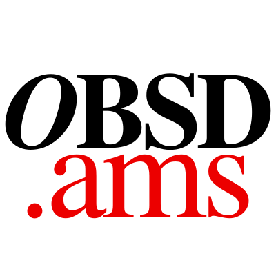
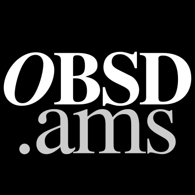
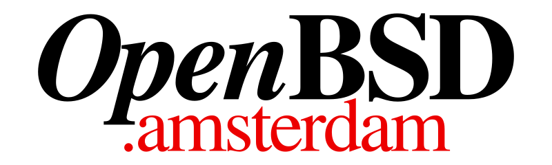
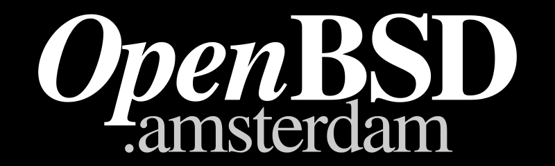
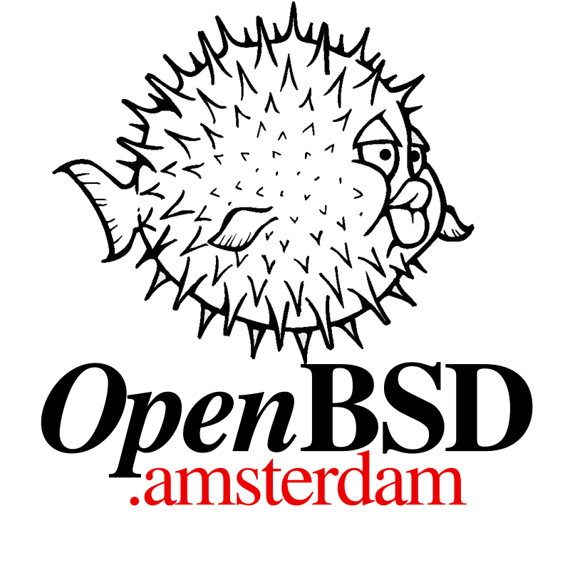
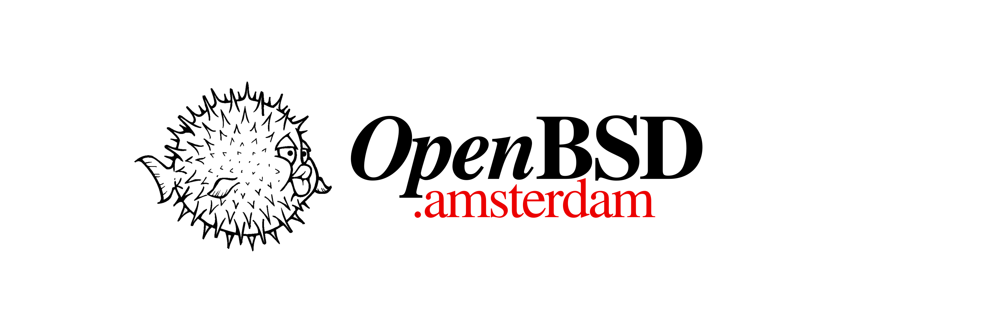
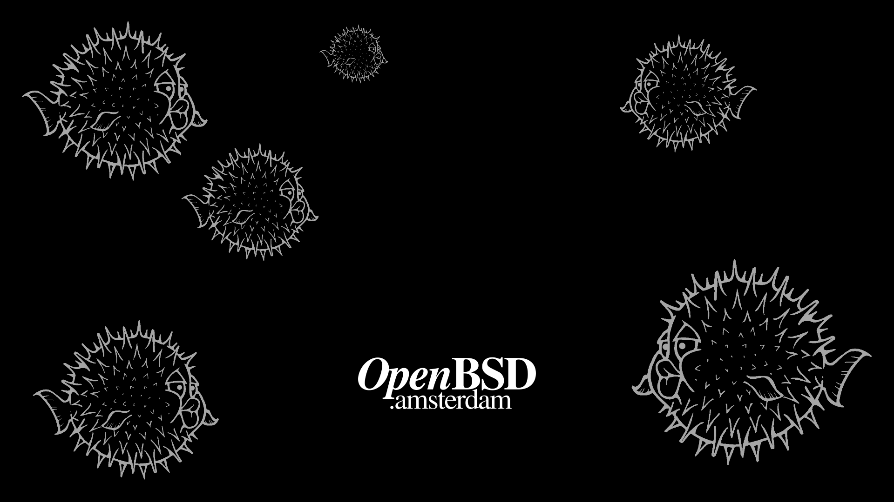
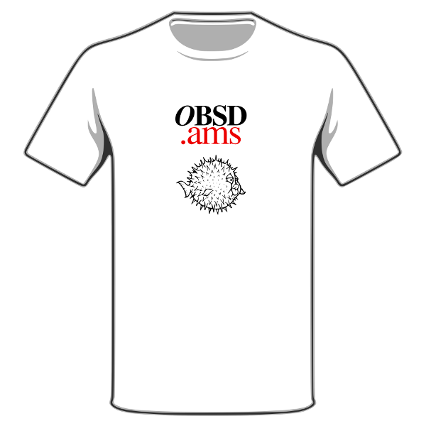

typeface Times
colors black #000000 rgb(0, 0, 0)
gray #cccccc rgb(204, 204, 204)
amsterdam #ec0000 rgb(236, 0, 0)
source logo.svg
bunq.svg
t-shirt.svg
puffy.svg
made with inkscape-0.92.3 and OpenBSD 6.3
cartoon puffy Theo de Raadt <theo@openbsd.org>
media kit Roman Zolotarev <hi@romanzolotarev.com>
made for OpenBSD Amsterdam
<link rel="icon" type="image/png" href="/favicon.png"> <img src="logo.png" alt="Logo">

 





